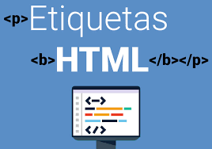

Etiquetas Basicas de Html
Como podemos ver el HTML es un lenguaje que su sintaxis se basa en etiquetas, se escriben con los simbolos mayor que y menor que
Muñoz, V. J. E. (2012). HTML, presente y futuro de la web. Vicente Javier Eslava Muñoz.
El proposito de este sitio es proyectar el aprendizaje de los temas de etiquetas Básicas de HTML, atributos y valores
Como podemos ver el HTML es un lenguaje que su sintaxis se basa en etiquetas, se escriben con los simbolos mayor que y menor que
Muñoz, V. J. E. (2012). HTML, presente y futuro de la web. Vicente Javier Eslava Muñoz.

Los atributos en HTML son elementos de las etiquetas que pueden proporcionar ciertas caracteristicas a un texto,imagen, etc, estos son representados por comandos o codigos dentro de los signos mayor y menor que
Los valores son el texto, imagen en el que se va a generar un cambio como, el tamaño, color alienación etc.
Equipo Vértice. (2009). Diseño básico de páginas web en HTML. Editorial Vértice.